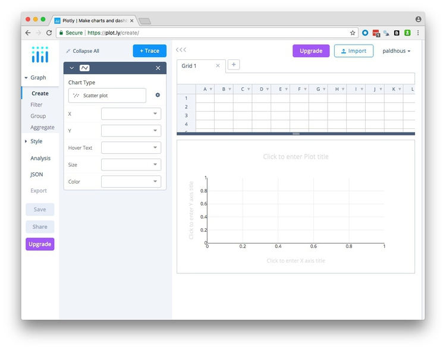
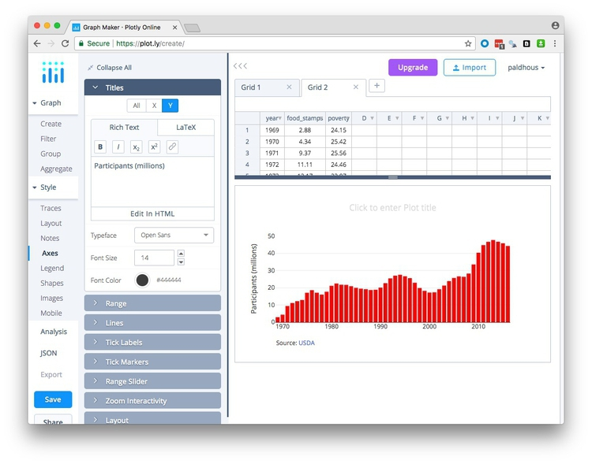
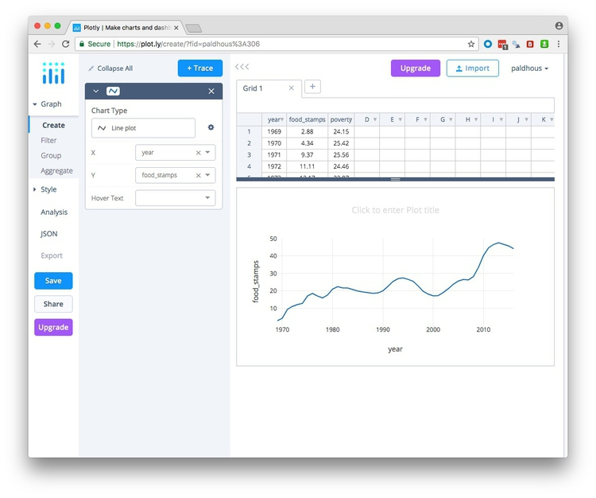
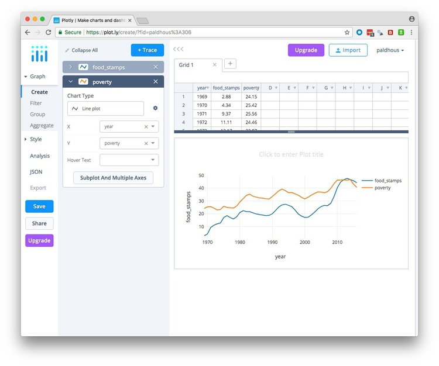
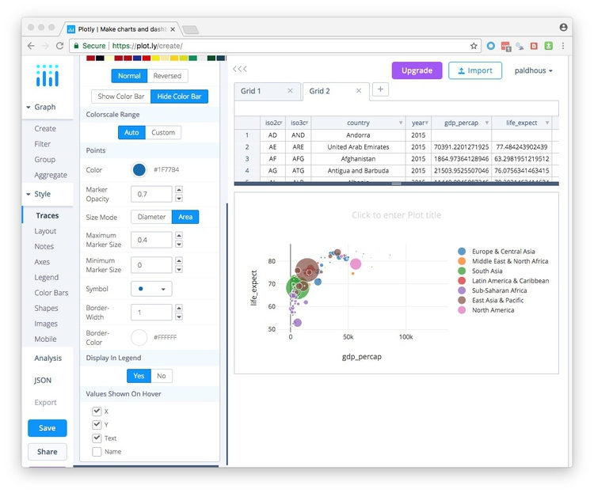

Basic charts with Plotly
Introducing Plotly
In today’s class we will make a series of simple charts using Plotly, a web application that allows you to upload data and use a point-and-click interface to make online charts, with tooltips and other interactivity. These can be embedded in your web projects, or exported as static images.
Log in to Plotly by clicking the button at top right:
The data we will use today
Download the data for this session from here, unzip the folder and place it on your desktop. It contains the following files:
food_stamps.csvContains the following variables:yearFrom 1969 to 2016.food_stampsAverage number of people participating in the Supplemental Nutrition Assistance Program, in millions, from the US Department of Agriculture.povertyEstimated number of people in poverty, in millions, from the US Census Bureau.
nations_2015.csvData from the World Bank Indicators portal, which is an incredibly rich resource. Contains the following fields:iso2ciso3cTwo- and three-letter codes for each country, assigned by the International Organization for Standardization.countryCountry name.year2015 for this data.gdp_percapGross Domestic Product per capita in current international dollars, corrected for purchasing power in different territories.life_expectLife expectancy at birth, in years.populationEstimated total population at mid-year, including all residents apart from refugees.regionincomeWorld Bank regions and income groups, explained here.
ca_vacc_counties.csvData from the California Department of Public Health on immunization in kindergartens, summarized at the county level, for the intake years 2001 to 2015. Contains the following fields:countystart_yearIntake year.enrolledNumber of children enrolled.completeNumber of children with complete vaccinations.pc_incompletePercentage of children without complete vaccinations.
test.htmlA web page for embedding online charts. It has been set up using Bootstrap responsive web design framework so that any content will automatically adjust to the size of the browser window in which it is viewed, centered on the page.
Make a bar chart showing number of people on food stamps over time
Having logged in to Plotly, click on the WORKSPACE link on the top navigation menu to see the following screen:

The Grid table shows the data to be visualized, so first import the file food_stamps.csv by clicking the Import buttom at top right. This will open the following dialog box:
In the Upload tab, click the Upload button and navigate to the folder containing the file, or drag the file onto the dialog box.
Your workspace should now look like this, with the imported data in a new Grid:
The first step in making a chart is to choose the Chart type. The default is a Scatter plot, but if you click on that box, you will see the other possibilities:
Select Bar chart and map food_stamps onto the Y axis and year onto the X to create the default chart:
Hover Text allows you to select an additional variable to appear in the tooltips. Leave this blank for this chart.
So far we have been working in the Graph section of the main left-hand menu, under Create. This also contains options to Filter a larger dataset or summarize or Aggregate the data; however, in general I would recommend filtering and summarizing your data before importing to Plotly. We will use Group in a subsequent chart to assign a qualitative color palette to a categorical variable.
Having made a basic chart, you can customize it by opening up the options in the Style section of the menu.
Traces contains options for customizing the main visual features of the chart. The available options depend on the chart type. Common options include customizing color and opacity. For bar charts can also change bar widths and the padding around them. We will simply chage the default blue Fill to a bright red, using the HEX value #FF0000:

Layout contains an option to change the size of the chart. I recommend keeping it set to Auto, as this allows the chart to be responsive, altering its size to fit the available space when embedded into a web page. This section also allows you to add a plot title, and to customize the font faces and size. If you don’t wish your chart to have tooltips, switch them off under Hover Interaction.
Notes allows you to annotate the chart in various ways. Click the + Annotation button to see the options. You can add subtitles or captions, or label individual data points; Automatically Positioned Labels will label data points with their values.
Add a Source to data, which is USDA (you can also provide a hyperlink to the data source, which is: https://www.fns.usda.gov/pd/supplemental-nutrition-assistance-program-snap), and position it at -30% relative to the Canvas.
Axes contains options for customizing the X and Y axes. It contains options to set the Range of each axis, to show or hide grid and zero lines under Lines, and to customize Tick Labels and Tick Markers. Range Slider adds a control to adjust the range shown on the X axis, which can be useful to zoom in on the details for very long time series. Plotly charts by default can be zoomed in and out, but I would recommend disabling this for both axes. You will usually want to adjust the axis Titles; delete the X axis title, and edit the Y axis title to Participants (millions).

Legend allows you to customize the legend for charts that need them, superfluous here.
Shapes provides options to add reference lines or bands to your chart; use in combination with Notes as required for chart annotation. (If you need to add a trend line to a scatter plot, use Curve fitting under Analysis.)
Images allows you to add images, such as an organization’s logo, to a chart.
Mobile contains options to create Mobile-friendly versions of your chart.
Having finished customizing your chart, hit the Save button, then save both Plot and Grid as Public:
Export and share the chart
Having saved your chart, select Export to save it as a PNG image, setting the desired height and width in pixels:
Click Download to save the PNG image file to you computer. (Saving in PDF, SVG, and EPS formats, which will give a graphic that can edited in a vector graphics editor such as Adobe Illustrator, is possible only with a paid account.)
For a simple embed, click the Share button and switch to the Embed tab to obtain an iframe code:
Copy the embed code, then open the test.html file in Sublime Text. Insert the code into the page and edit as follows:
<div class="container">
<iframe width="100%" height="450" frameborder="0" scrolling="no" src="https://plot.ly/~paldhous/307.embed"></iframe>
</div> <!-- /.container -->
An iframe allows you to embed one web page, here dislplaying your chart on Plotly’s servers, into another. Set its height in pixels, and its width as 100%. This will allow the chart width to adjust for different browser window sizes. You may also need to insert https: at the start of the web address.
A div is a distinct section of a webpage. Insert the iframe into the div with the class container. This is a feature of Bootstrap that will center the embed on you page, optimized for different browser window sizes.
Save the page and open it in your web browser:
A default Plotly embed contains an EDIT CHART link, allowing other users to edit the chart using their own Plotly account. When you hover over the chart, various controls appear at top right.
To obtain an embed without these features, which I would recommend, select Export once more, switch to the HTML tab, and Download as Html file:
Place the downloaded file in your working folder for this class and rename it as food-stamps-bar.html. Open in Sublime Text, scroll to the bottom of the file, and edit as follows:
Before:
config: {"mapboxAccessToken": "pk.eyJ1IjoiY2hyaWRkeXAiLCJhIjoiY2lxMnVvdm5iMDA4dnhsbTQ5aHJzcGs0MyJ9.X9o_rzNLNesDxdra4neC_A", "linkText": "Export to plot.ly", "showLink": true}
After:
config: {"mapboxAccessToken": "pk.eyJ1IjoiY2hyaWRkeXAiLCJhIjoiY2lxMnVvdm5iMDA4dnhsbTQ5aHJzcGs0MyJ9.X9o_rzNLNesDxdra4neC_A", "linkText": "Export to plot.ly", "showLink": false, "displayModeBar": false}
Now open test.html once more and edit the iframe to embed the downloaded web page:
<div class="container">
<iframe width="100%" height="450" frameborder="0" scrolling="no" src="food-stamps-bar.html"></iframe>
</div> <!-- /.container -->
You should now have the following clean embed:
Make a dot-and-line chart comparing number of people in poverty with number on food stamps over time
Click your browswer’s back arrow to return to your account’s home page:
Now hover over the grid with the food stamps data, and click on the EDIT button to start making a new chart from the same data.
This time, select Line plot as the chart type, and put food_stamps on the Y axis and year on the X:

Now click the + Trace button to add a second line, and edit so that poverty is mapped to the Y axis.

In the same way, you can add multiple traces to a make a chart combining different chart types, for example a line chart with a bar chart.
Switch to Traces in the Style section, and add Points to All Traces. (With multiple traces, you can also use the Individual tab to customize them one at a time.) Once you add points to a line chart, Poltly should automatically adjust the Y axis to start at zero and add a zero line.
By default, Plotly has chosen a qualitative palette with two colors opposed on the color wheel; you can use the Individual tab to customize the color of each trace individually if you wish.
Switch to Axes, remove the Title for the X axis and edit the Y axis title to People (millions):
Swtich to Legend, and adjust its Positioning, Orientation and Trace Order as desired. You can also directly edit the trace labels on the chart:

Add source information under Notes, save the chart and then export/share as before.
Make a heat map showing the percentage of kindergarten children in California with incomplete immunizations over time, by county
Click your browswer’s back arrow to return to your account’s home page, then select WORKSPACE to open a new blank grid. Import the ca_vacc_counties.csv file:
Select Heatmap under Chart Type and map start_year to the X axis, county to the Y, and pc_incomplete to Z, for color. Then click Flip Vertically to put the counties in alphabetical order:
Switch to Traces in the Style section and adopt an informative sequential Colorscale:
Under Axes, remove both axis titles.
Under Color Bars, add a Title of Incomplete vaccination:
Then add a Suffix of % to the Labels:
Add source information under Notes, save the chart, and then export/share as before. For a heat map with this many rows, it will be necessary to make the height greater than for most other types of chart:
Make a bubble chart showing the relationship between GDP per capita and life expectancy for the world’s nations in 2015
Click your browswer’s back arrow to return to your account’s home page, then select WORKSPACE to open a new blank grid. Import the nations_2015.csv file:
Keep the default Scatter plot and map gdp_percap onto the X axis and life_expect onto the Y:
Now add Country to Hover text, so that the countries are identified in the tooltips, and map population onto Size. This will make the circles enormous, but we will fix that later:
We want to color the cirles by region, but do not use the Color option, which is for mapping color to a quantitative variable. Instead, under Group, click the + Group button and group by region, which will apply a categorical color palette to the circles by region:
Switch to Traces in the Style section and reduce the Maximum Marker Size for an optimal appearance:

(Notice that Plotly by default correctly scales circles by Area.)
Under Axes, edit the axis titles, and to mimic the appearance of the chart we saw in the Gapminder video switch the Axis Type to Log for the X axis under Range. Also add a Prefix of $ under Tick Labels:
Again, add source information under Notes, save the chart, and then export/share as before.